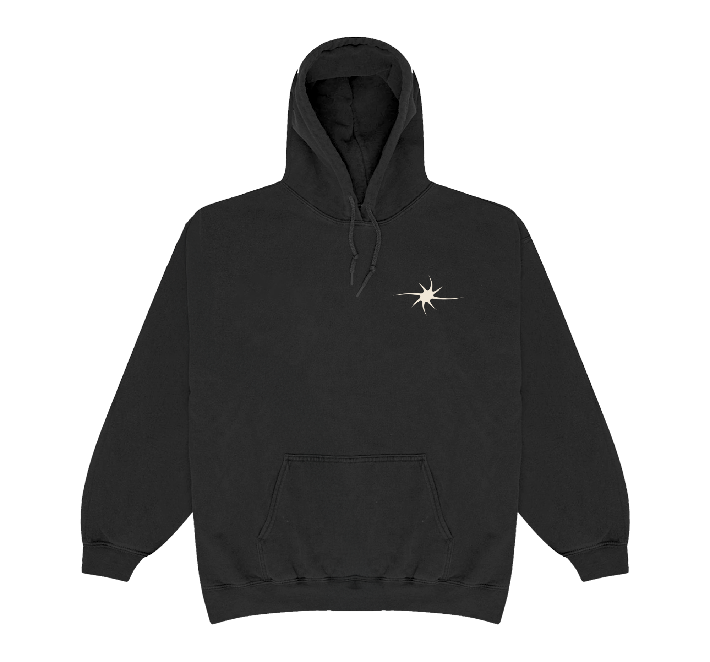
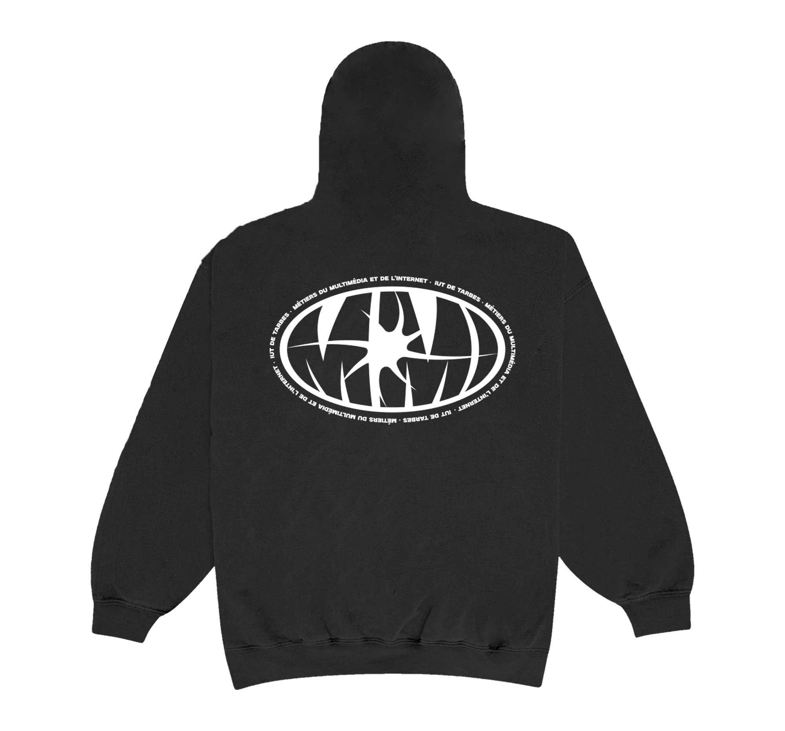
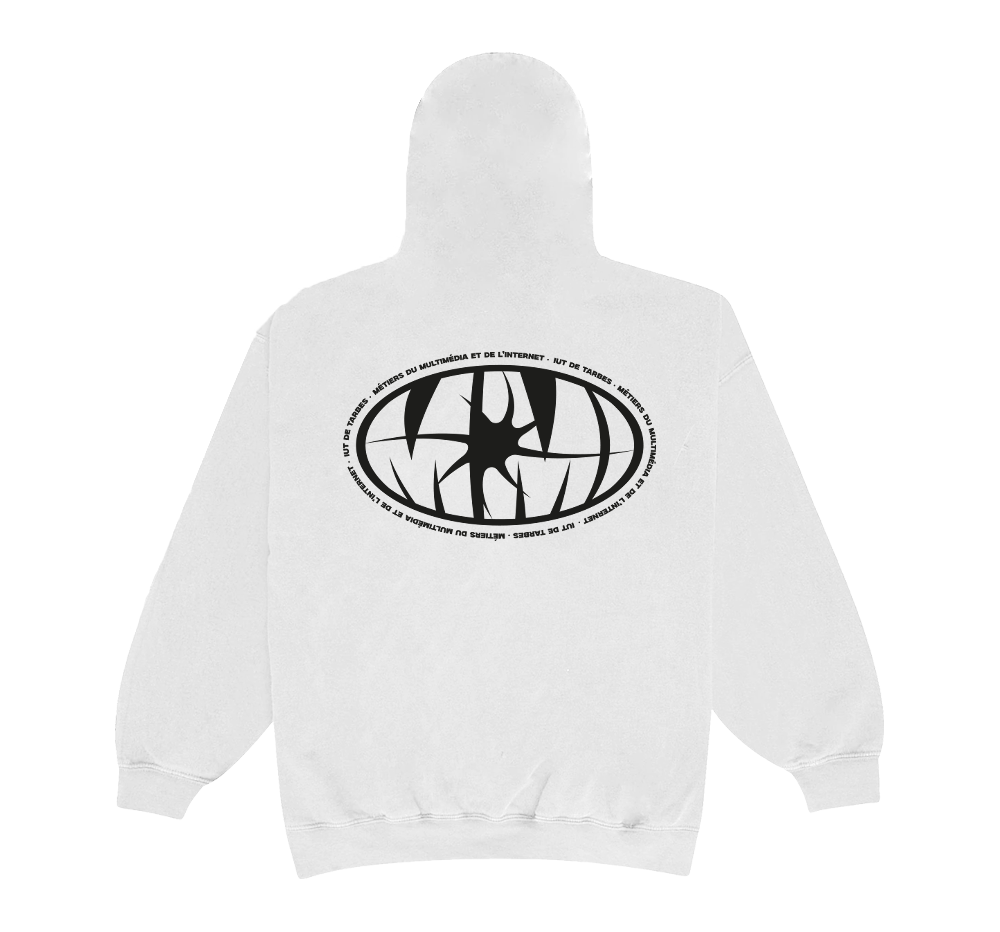

←
merch de promo
Chaque année, un concours est organisé pour trouver le nouveau design qui sera sur le merch de la promo. Cette année, j'ai voulu casser le côté "logo d'école" et créer un visuel qu'on porte par envie.
Je suis partie sur une esthétique un peu y2k ou encore cyber sigilism, qui font écho aux codes du streetwear actuel. J'ai alors conçu le design sur Illustrator, j'ai fait le choix qu'il soit monochrome pour plus d'impact visuel et faciliter la sérigraphie sur les différents textiles/items.
Le projet a finalement été retenu par les étudiants pour l'impression. C’est une belle récompense de voir aujourd'hui ce graphisme quitter mon écran pour être porté dans les couloirs de l'IUT.




